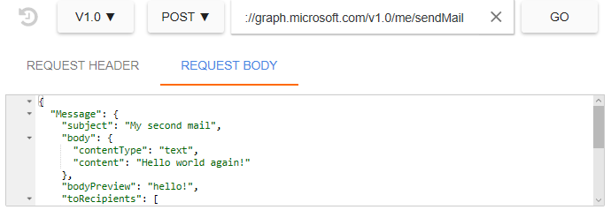

Overview of Microsoft Graph
Microsoft Graph API is a RESTful interface that is used to interact with data in the Microsoft cloud. You can use Microsoft Graph in your applications to read, write, and traverse your users’ data through a single endpoint. Here’s is what the Graph is made of:
Nodes are the objects you interact with, like users, groups, mail, calendar, files. Each node contains information about that node like displayName and id, stored as properties.
Edges are the connections between the nodes, like isMemberOf between a user and a group, and isOwnerOf between a user and a file.
In this overview, you will learn how to send a mail and browse your drive using Microsoft Graph through the Graph Explorer.
Introducing the Graph Explorer
The Graph Explorer is a simple way to get started with Microsoft Graph. Simply put, this is just a web app built on top of Microsoft Graph that takes in your HTTP requests and returns live responses right through the browser. All you have to do is sign in, and it will handle all the token exchanges to make your requests work.
To learn more about obtaining and using tokens, go to Managing your access token through REST
API Versioning
In Graph Explorer, you will choose which version of Microsoft Graph you will use. - v1.0 is the production ready tier of Graph. We promise no breaking changes as more features are added. - beta is the experimental tier of Graph. Features will be added here and then pushed to a production ready tier or otherwise removed. It is recommended you don’t write production code against beta.
Send a mail
NOTE THIS MESSAGE WAS MARKED AS SPAM IN GMAIL. NEED TO FIGURE OUT WHY.
https://graph.microsoft.com/v1.0/me/sendMail
{
"Message": {
"subject": "My second mail",
"body": {
"contentType": "text",
"content": "Hello world again!"
},
"bodyPreview": "hello!",
"toRecipients": [
{
"emailAddress": {
"name": "Vivian",
"address": "viv.liu25@gmail.com"
}
}
]
}
}
Sign into Graph Explorer using your Microsoft account (Outlook, Live, Hotmail) or Office365 account if you are an administrator (because they have to consent to Graph Explorer). Select v1.0 and POST from the dropdowns, and enter the following request and body.

Hit Go.
Congrats, you just sent your first mail using Microsoft Graph!
The response contains an HTTP status code to tell you the success or failure state of your request. To learn more about error codes and some of the causes, visit Errors.
MVP for setting up a tenant/MSA? What works for MSA “tenant” vs AAD tenant?
Browse your drive
Make sure you are signed into Graph Explorer. Select v1.0 and GET from the dropdowns, and enter the following request URL.
https://graph.microsoft.com/v1.0/drives
Hit Go.
This lets you see the OneDrive documents you have under this account. You can create a new folder, navigate through folders, and download files through a OneDrive tutorial.
Authentication
To authorize, use this code:
require 'kittn'
api = Kittn::APIClient.authorize!('meowmeowmeow')
import kittn
api = kittn.authorize('meowmeowmeow')
# With shell, you can just pass the correct header with each request
curl "api_endpoint_here"
-H "Authorization: meowmeowmeow"
const kittn = require('kittn');
let api = kittn.authorize('meowmeowmeow');
Make sure to replace
meowmeowmeowwith your API key.
Kittn uses API keys to allow access to the API. You can register a new Kittn API key at our developer portal.
Kittn expects for the API key to be included in all API requests to the server in a header that looks like the following:
Authorization: meowmeowmeow
Kittens
Get All Kittens
require 'kittn'
api = Kittn::APIClient.authorize!('meowmeowmeow')
api.kittens.get
import kittn
api = kittn.authorize('meowmeowmeow')
api.kittens.get()
curl "http://example.com/api/kittens"
-H "Authorization: meowmeowmeow"
const kittn = require('kittn');
let api = kittn.authorize('meowmeowmeow');
let kittens = api.kittens.get();
The above command returns JSON structured like this:
[
{
"id": 1,
"name": "Fluffums",
"breed": "calico",
"fluffiness": 6,
"cuteness": 7
},
{
"id": 2,
"name": "Max",
"breed": "unknown",
"fluffiness": 5,
"cuteness": 10
}
]
This endpoint retrieves all kittens.
HTTP Request
GET http://example.com/api/kittens
Query Parameters
| Parameter | Default | Description |
|---|---|---|
| include_cats | false | If set to true, the result will also include cats. |
| available | true | If set to false, the result will include kittens that have already been adopted. |
Get a Specific Kitten
require 'kittn'
api = Kittn::APIClient.authorize!('meowmeowmeow')
api.kittens.get(2)
import kittn
api = kittn.authorize('meowmeowmeow')
api.kittens.get(2)
curl "http://example.com/api/kittens/2"
-H "Authorization: meowmeowmeow"
const kittn = require('kittn');
let api = kittn.authorize('meowmeowmeow');
let max = api.kittens.get(2);
The above command returns JSON structured like this:
{
"id": 2,
"name": "Max",
"breed": "unknown",
"fluffiness": 5,
"cuteness": 10
}
This endpoint retrieves a specific kitten.
HTTP Request
GET http://example.com/kittens/<ID>
URL Parameters
| Parameter | Description |
|---|---|
| ID | The ID of the kitten to retrieve |
Errors
The Kittn API uses the following error codes:
| Error Code | Meaning |
|---|---|
| 400 | Bad Request – Your request sucks |
| 401 | Unauthorized – Your API key is wrong |
| 403 | Forbidden – The kitten requested is hidden for administrators only |
| 404 | Not Found – The specified kitten could not be found |
| 405 | Method Not Allowed – You tried to access a kitten with an invalid method |
| 406 | Not Acceptable – You requested a format that isn’t json |
| 410 | Gone – The kitten requested has been removed from our servers |
| 418 | I’m a teapot |
| 429 | Too Many Requests – You’re requesting too many kittens! Slow down! |
| 500 | Internal Server Error – We had a problem with our server. Try again later. |
| 503 | Service Unavailable – We’re temporarially offline for maintanance. Please try again later. |